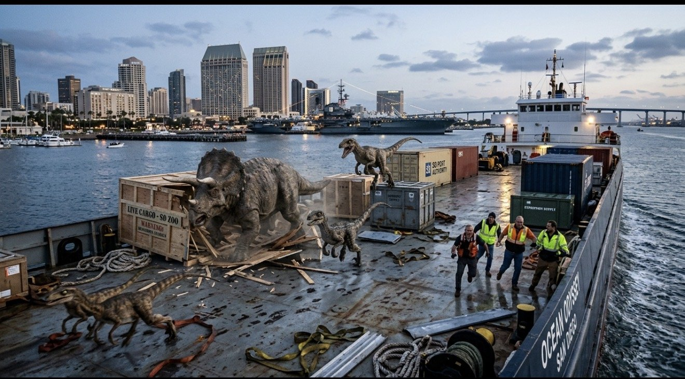

Dinosaurs Land in San Diego Harbor, Now Running Loose in Scripps Ranch
A shipment of real, live dinosaurs headed for the San Diego Zoo broke out of its crates in San Diego Bay this morning. The herd was last seen stomping through Scripps Ranch neighborhoods.

The cargo ship Ocean Odyssey was unloading near downtown just after sunrise when crew members heard "a lot of very loud crunching." Crates stamped LIVE CARGO – SD ZOO burst open, and out came a Triceratops and a pack of fast, feathery raptors, with a Tyrannosaurus rex close behind. "We were told it was a shipment of very large chickens," one deckhand said while running.
The herd headed north on Interstate 15, where drivers said traffic was "slower than usual, but honestly very polite." By mid-morning, the dinosaurs had reached Scripps Ranch, where a Triceratops was spotted munching shrubs on Scripps Ranch Boulevard and the T. rex was seen drinking from Lake Miramar.
"I went to get the mail and there was a dinosaur eating my neighbor's hedge. It waved at me. I think it waved at me."
— a Scripps Ranch resident
Scientists from the Roar's own science desk believe the dinosaurs may have been "on vacation from a very, very long time ago" and took a wrong turn somewhere near Coronado. They appear to be most interested in snacks, especially fruit snacks, goldfish crackers and any lunch left unattended.
Officials stress the dinosaurs are very curious but not grumpy, as long as nobody takes their snacks. A team of dinosaur experts is on the way with "the biggest net ever made" and a truckload of watermelons.
What Scripps Ranch kids should do right now
- Stay inside and look out the window carefully (dinosaurs love waving).
- Keep all snacks hidden, especially fruit snacks.
- Finish your homework, so you're ready if school is cancelled.
- If you see a dinosaur, tell a grown-up and do your best roar. Roaring back is the polite thing to do.
This is a developing story. The Roar will update this page as the herd moves. Last seen: heading toward the Scripps Ranch library, "possibly to return some very overdue books."